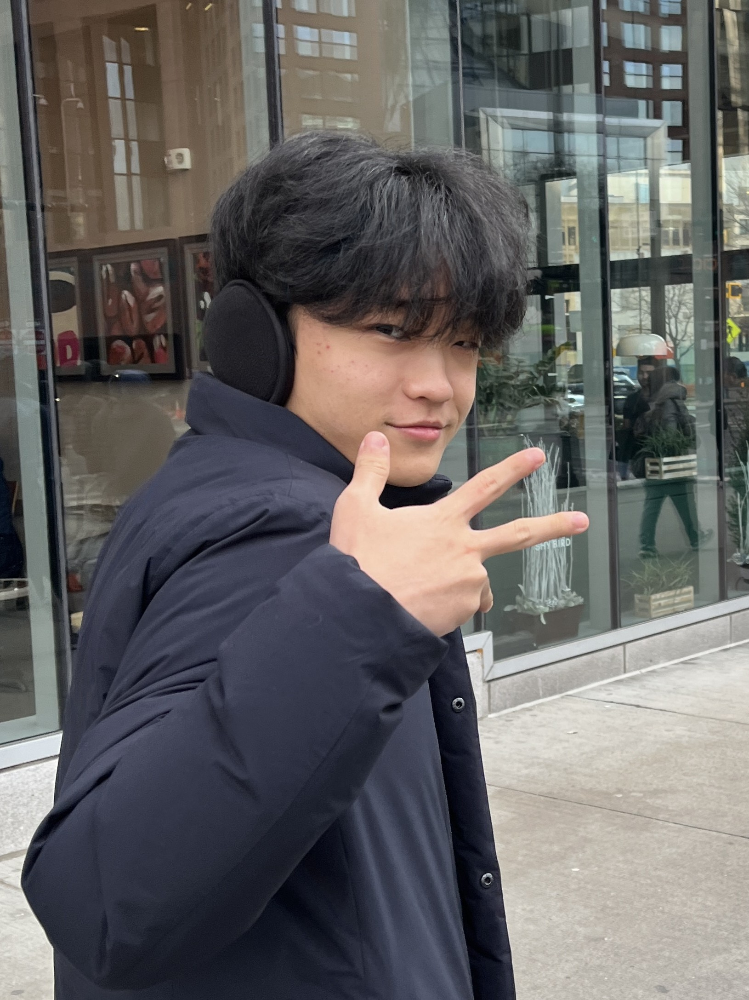

For a lot of students, music class means playing whatever the teacher picks — with no competitions, no ensembles beyond class, and no real way to connect with other musicians outside their own school. TYMN exists to change that.
We're a student-led organization that connects young musicians across Texas with the mentorship, guidance, and community to develop their passion.
TYMN is currently in its founding phase, launching our first pilot program—an open, virtual competition—in collaboration with partner schools across Texas.
Two students turning a personal experience into a statewide program. More founding members will be announced as TYMN grows.

Clint Lee is a violinist and pianist from Austin, Texas, with over 10 years of experience on both instruments. He has performed extensively as a soloist, ensemble musician, and orchestral musician, and has frequently served as concertmaster of the LASA Honors Orchestra. Clint is a five-time TMEA Region Orchestra musician and a two-time TMEA All-State Orchestra musician, including selection to the 2025 TMEA All-State Philharmonic Orchestra and assistant principal in the 2024 TMEA All-State Sinfonietta Orchestra. He was named Concertmaster of the 2025 TMEA Region 18 Symphony Orchestra and has also served as concertmaster and soloist with the Austin All-City Orchestra. As a soloist and concertmaster, Clint has performed at Weill Recital Hall and on the Perelman Stage at Carnegie Hall in New York, as well as at Walt Disney Concert Hall in Los Angeles. He was awarded Second Prize in the New York Artists International Competition and Second Place in the 2023 American Protégé competition. He is also a two-time winner of the International Golden Classical Music Awards, receiving awards for both violin and piano. Clint attended the 2025-2026 Boston University Tanglewood Institute Young Artists Orchestra program and continues to pursue music in violin while working to expand opportunities for young musicians through the Texas Youth Music Network.
Shaoyu Wang is a current junior at LASA. He has studied classical piano for over 10 years and has won multiple awards at ADMTA competitions. He has also played as accompanists for youth orchestras and soloists alike, as well volunteering to perform for nursing homes with Project Melody.
No. TYMN is an independent student-led organization that operates across multiple schools and cities in Texas. We partner with schools but are not affiliated with or administered by any single school or district.
No. All TYMN programs are free for student participants. Every student deserves the chance to compete, perform, and connect with other musicians — not just the ones whose school programs already offer it.
Any instrument. Orchestra and band instruments, piano, voice, guitar — if you play it, you can submit it. TYMN's founding team has the deepest expertise in strings, but every instrument is welcome in our programs and events.
There's no application — just reach out directly. Email, text, or Discord all work, and we'll go from there.
TYMN is currently in its founding and pilot phase. The Fall Kickoff Challenge is our first event — beyond that, reach out and we'll keep you posted as more programs take shape.
Music educators and administrators can reach out directly via email to discuss bringing TYMN workshops and mentorship programs to your students. We welcome inquiries from schools and music programs across Texas.